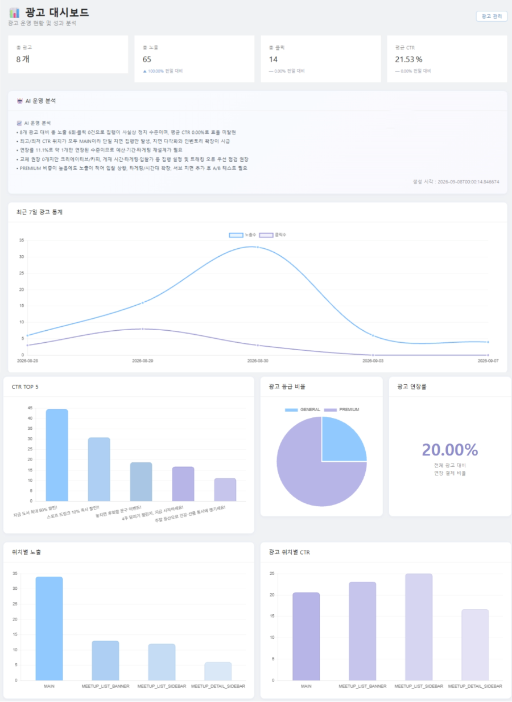

대학생 및 일반 사용자가 관심사를 기반으로 모임을 생성하고 참여할 수 있는 서비스입니다.
PROJECT HISTORY
하나의 서비스를 단계적으로 개선하며 기능뿐 아니라 구조와 운영까지 확장했습니다.
모임 생성 및 참여를 중심으로 서비스의 기본 기능을 구현했습니다.
React와 REST API 기반으로 프론트엔드와 백엔드를 분리하고 인증 및 상태 관리 구조를 개선했습니다.
광고 상품과 결제, 광고 노출, 통계 및 자동화 기능을 추가하여 실제 서비스 운영을 고려한 구조로 확장했습니다.
동일한 서비스를 1차부터 3차까지 단계적으로 개선했습니다.
모임 생성·조회·참여 등 서비스의 기본 기능을 구현했습니다. 사용자와 모임을 중심으로 서비스의 기본적인 데이터 구조와 사용자 흐름을 구성했습니다.
프론트엔드와 백엔드를 분리하고 React 기반 REST API 구조로 전환했습니다. JWT 인증과 Redux-Saga를 적용하여 프론트엔드의 비동기 데이터 흐름을 관리했습니다.
JPA 기반으로 데이터 접근 구조를 개선하고 광고 등록·승인·결제·노출·통계 기능을 추가했습니다. Scheduler, Redis, LLM API를 활용하여 광고 운영 자동화와 성과 분석 기능까지 확장했습니다.
모임 생성·수정·삭제 및 회원 참여 기능을 제공합니다.
JWT 기반 인증과 사용자 역할에 따른 접근 권한을 관리합니다.
파트너 광고 등록부터 관리자 승인, 결제 및 노출까지의 전체 생명주기를 구현했습니다.
노출·클릭·CTR을 수집하고 Scheduler를 통해 상태 변경과 통계 처리를 자동화했습니다.
ADVERTISEMENT SYSTEM
단순 광고 CRUD가 아니라 등록부터 결제, 노출, 통계, 종료까지 하나의 생명주기로 설계했습니다.
승인 상태와 실제 광고 노출 상태를 분리했습니다.
WAITING → APPROVED → REJECTED
PENDING → OPEN → CLOSED
승인 여부와 실제 서비스 노출 상태를 하나의 상태값으로 관리하지 않도록 설계했습니다.
결제 요청 시점의 금액을 totalBudget에 저장했습니다.
관리자가 이후 가격 정책을 변경하더라도 이미 구매한 광고의 결제 금액이 변하지 않도록 했습니다.
광고 노출과 클릭 데이터를 수집하고 일별 통계 및 CTR을 계산합니다.
CTR = Click / Impression × 100
광고 상태 변경과 통계 처리, 종료 예정 광고 알림 등을 자동화했습니다.
ADMIN DASHBOARD
일별 노출·클릭 및 CTR 통계를 기반으로 광고 성과를 확인할 수 있도록 구성했습니다.

TROUBLESHOOTING
관리자 승인 여부와 광고의 실제 노출 상태를 하나의 상태값으로 처리하면서 상태 전이가 복잡해지는 문제가 있었습니다.
→ 승인 상태와 광고 상태를 분리하여 각각 독립적으로 관리하도록 개선광고 가격표를 관리자가 수정한 이후 기존 광고의 결제 금액까지 변경될 수 있는 문제가 있었습니다.
→ 구매 시점의 최종 금액을 totalBudget에 저장하여 결제 금액을 고정초기 대시보드는 7일 기준으로 데이터를 조회했지만 충분한 광고 데이터가 쌓이지 않아 성과 비교가 어려웠습니다.
→ 일별 통계를 별도로 저장하고 조회 기간을 확장할 수 있도록 개선RETROSPECTIVE
MOIT 1차부터 3차까지 개발하면서 기능 하나를 추가하는 것보다 해당 기능이 기존 서비스의 흐름에 어떤 영향을 주는지 고려하는 것이 중요하다는 것을 배웠습니다.
특히 광고 기능을 구현하면서 등록 → 승인 → 결제 → 노출 → 통계 → 종료라는 전체 생명주기를 기준으로 설계하면서 개별 API가 아닌 서비스 전체의 흐름을 바라보게 되었습니다.
이후에도 단순히 기능을 완성하는 것에서 그치지 않고 데이터의 흐름과 상태 변화를 기준으로 확장 가능한 구조를 만드는 개발자가 되고자 합니다.